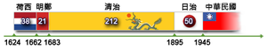

オランダ統治時代（1624年 - 1662年）
台湾が注目されるようになったのは16世紀の明朝時代になってからである。
倭寇の活動が活発化するにつれて、台湾は倭寇の根拠地の一つとして使用されるようになり、やがて漢民族、日本人が恒久的に居住し始めるまでに至った。
また、この時代になると、大航海時代にあったヨーロッパ各国から多くの人々が来航するようになり、台湾の戦略的重要性に気がついたオランダやスペインが台湾島を「領有」し、東アジアにおける貿易・海防の拠点としていった。そのために、日本への鉄砲やザビエルによるキリスト教伝来も、おそらくは台湾を経由してきたのだと思われる。
鄭氏政権時代（1662年 - 1683年）
1644年、李自成の反乱によって明朝が滅亡し、混乱状況にあった中国に満州族の王朝である清が進出して来た。これに対し、明朝の皇族・遺臣達は、「反清復明」を掲げて南明朝を興し、清朝への反攻を繰り返したが、力及ばず1661年に滅亡させられた。そのために、「反清復明」を唱えて清朝に抵抗していた鄭成功の軍勢は、清への反攻の拠点を確保するために台湾のオランダ・東インド会社を攻撃し、1662年に東インド会社を台湾から駆逐することに成功した。
大清帝国統治時代（1683年 - 1895年）
建国以来反清勢力の撲滅を目指して来た清帝国は、「反清復明」を掲げる台湾の鄭氏政権に対しても攻撃を行い、1683年に台湾を制圧して鄭氏政権を滅ぼすことに成功した（澎湖海戦）。
だが、大清帝国は鄭氏政権を滅ぼすために台湾島を攻撃・制圧したのであり、当初は台湾島を領有することに消極的であった。しかしながら、朝廷内での協議によって、最終的には軍事上の観点から領有することを決定し、台湾に1府（台湾）3県（台南、高雄、嘉義）を設置した上で福建省の統治下に編入した。
日本統治時代（1895年 - 1945年）
台湾が本格的に開発されたのは日本統治時代になってからである。1895年5月25日、日本への割譲反対を唱える漢人により台湾民主国の建国が宣言され進駐した日本軍との乙未戦争に発展した。日本軍の圧倒的に優勢な兵力の前に政権基盤が確立していなかった台湾民主国は間もなく崩壊、1896年に三一法が公布され台湾総督府を中心とする日本の統治体制が確立した。
中華民国統治時代（1945年 - 現在）
1945年の第二次世界大戦後、連合国に降伏した日本軍の武装解除のために、蔣介石率いる中華民国・南京国民政府軍が1945年10月17日に約１万2,000人と官吏200余人が米軍の艦船から台湾に上陸して来た。
南京国民政府は、1945年10月25日の日本軍の降伏式典後に、台湾の「光復」（日本からの解放）を祝う式典を行い、台湾を中華民国の領土に編入すると同時に、台湾を統治する機関・台湾行政公所を設置した。